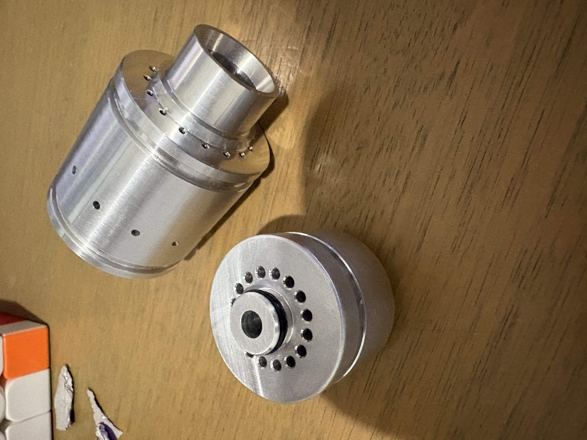
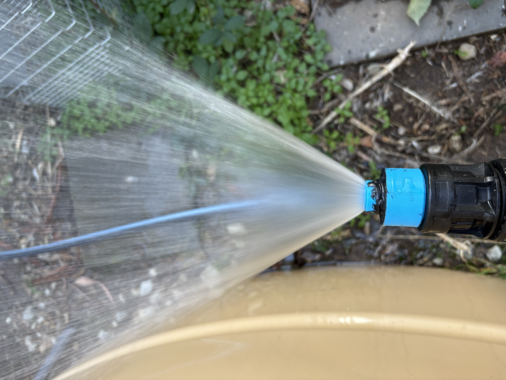
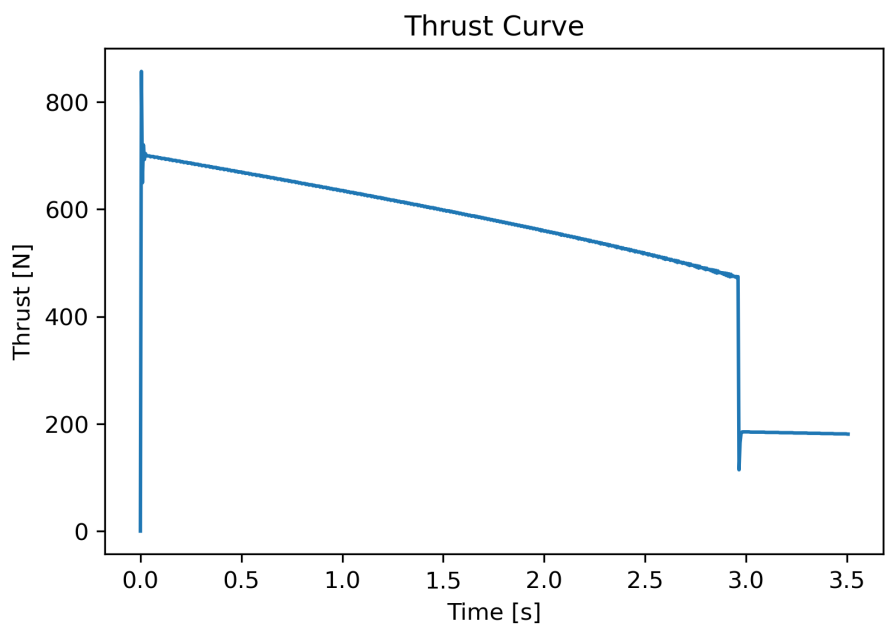
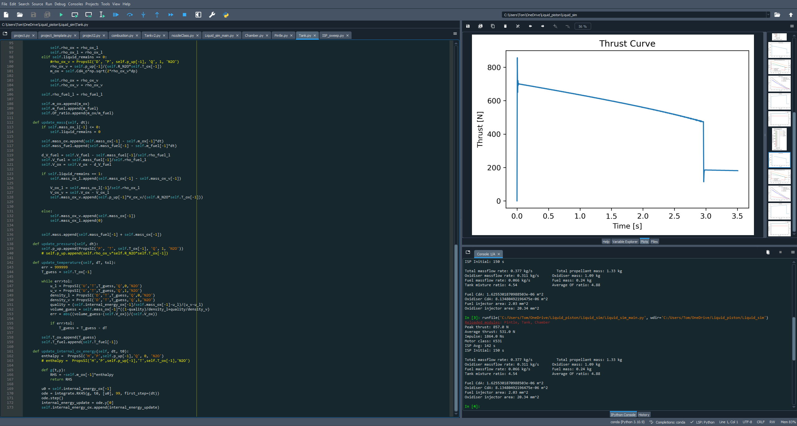

Scope
- Designed a nitrous oxide fill and ground support equipment package with safety and instrumentation integration.
- Developed a pyro-actuated Urbanski-Colburn style valve system to manage fuel and oxidiser flow from a single fill line.
- Built a custom data acquisition system for live pressure, temperature, thrust and camera telemetry.
- Performed valve and injector characterisation to refine momentum ratios, spray performance and chamber stability.
Impact
Integrated instrumented test stand
Complete system-level hardware ready for hot fire campaigns with live data capture.
Custom valve and injector design
Pintle-style injector development with empirical discharge mapping for performance tuning.
Simulation-driven planning
Thermodynamic modelling used to shape test expectations and support risk mitigation.
Process & visuals
Architecture
Mapped the liquid engine, feed system and safety envelope before selecting valves, sensors and hardware paths.

Build
Fabricated manifolds, actuated valves and instrumentation panels while integrating controls for hot fire readiness.

Validation
Executed valve and injector tests with live DAQ capture to refine performance, timing and safety protocols.
Media gallery





Project story
Define
Set requirements for N2O handling, instrumentation, pressure control and measurable hot fire performance.
Develop
Designed, prototyped and assembled a full liquid engine test system with integrated control and safety subsystems.
Deliver
Brought the system to a test-ready state with documented commissioning steps and performance review criteria.
Status
- Hardware prototyping completed, with initial valve testing already underway.
- Planning a hot fire test campaign with expanded instrumentation and safety protocols.
- Project documentation, photos and results are being assembled for the next development milestone.